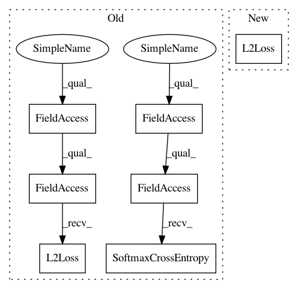

0c241128fc008e89745690bd58e91e754aa40514,deepchem/models/tensorgraph/models/graph_models.py,DAGModel,__init__,#DAGModel#Any#Any#Any#Any#Any#Any#Any#Any#Any#Any#Any#Any#,340
Before Change
output = tf.keras.layers.Softmax()(logits)
outputs = [output, logits]
output_types = ["prediction", "loss"]
loss = dc.models.losses.SoftmaxCrossEntropy()
else:
output = tf.keras.layers.Dense(n_tasks)(dag_gather)
if self.uncertainty:
log_var = Dense(n_tasks)(dag_gather)
var = tf.keras.layers.Activation(tf.exp)(log_var)
outputs = [output, var, output, log_var]
output_types = ["prediction", "variance", "loss", "loss"]
def loss(outputs, labels, weights):
diff = labels[0] - outputs[0]
return tf.reduce_mean(diff * diff / tf.exp(outputs[1]) + outputs[1])
else:
outputs = [output]
output_types = ["prediction"]
loss = dc.models.losses.L2Loss()
model = tf.keras.Model(
inputs=[
self.atom_features, self.parents, self.calculation_orders,
self.calculation_masks, self.membership, self.n_atoms
After Change
else:
outputs = [output]
output_types = ["prediction"]
loss = L2Loss()
model = tf.keras.Model(
inputs=[
self.atom_features, self.parents, self.calculation_orders,
self.calculation_masks, self.membership, self.n_atoms
In pattern: SUPERPATTERN
Frequency: 3
Non-data size: 7
Instances
Project Name: deepchem/deepchem
Commit Name: 0c241128fc008e89745690bd58e91e754aa40514
Time: 2019-05-10
Author: peastman@stanford.edu
File Name: deepchem/models/tensorgraph/models/graph_models.py
Class Name: DAGModel
Method Name: __init__
Project Name: deepchem/deepchem
Commit Name: 0c241128fc008e89745690bd58e91e754aa40514
Time: 2019-05-10
Author: peastman@stanford.edu
File Name: deepchem/models/tensorgraph/models/graph_models.py
Class Name: WeaveModel
Method Name: __init__
Project Name: deepchem/deepchem
Commit Name: 0c241128fc008e89745690bd58e91e754aa40514
Time: 2019-05-10
Author: peastman@stanford.edu
File Name: deepchem/models/tensorgraph/models/graph_models.py
Class Name: GraphConvModel
Method Name: __init__